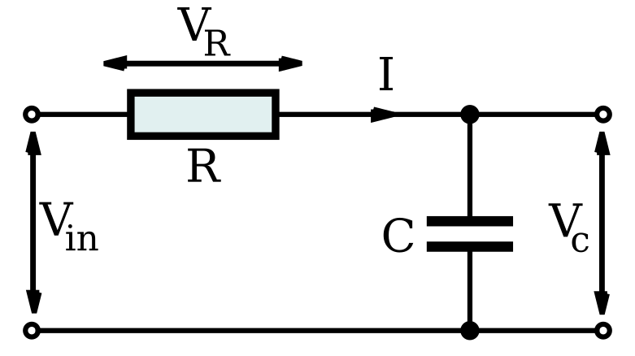

Lab 9 : RC and RL Circuit
Seneca College SES250 Electromagnatics
Objectives
- To observe the charging and discharging of a capacitor in an RC circuit
Purpose
- Measure the raise time (or time constant) of an RC circuit using a DSO
Description
Capacitor
Similar to a Resistor, Capacitor use special marking to indicate their values. Since the amount of area for markings on a capacitor is limited, there are also a set of rules for specifying the capacitance value of a capacitor. Manufacturers often use two separate lines for their capacitor markings and these have the following meanings: - First line: capacitance (in pF or μF) [and tolerance (J=5%, K=10%, M=20%)] - Second line: rated DC voltage [and code for the dielectric material]
For a ceramic capacitor, often only a three-digit code is given. The first two digits correspond to the first two digits of the value whilst the third digit is a multiplier which gives the number of zeros to be added to give the value in pF. For example, 104 means 10 x 104 pF = 100nF.
Furthermore, some capacitors such as electrolytic capacitors are marked with symbols (“+” and “-”) to indicate the correct polarity - failure to observe these markings when connecting a capacitor to a circuit can be catastrophic!

Figure 8.1 Various Capacitor Markings
Source: Capacitor Markings
RC circuit
A resistor-capacitor circuit (RC circuit), or RC filter or RC network, is an electric circuit composed of resistors and capacitors. It may be driven by a voltage or current source and these will produce different responses. A first order RC circuit is composed of one resistor and one capacitor and is the simplest type of RC circuit.

Figure 8.2 Series RC circuit
A series RC circuit with a capacitor that is initially charged to then allowed to discharge through a resistor will exhibit the following relationship for the voltage across the capacitor over a period of time:
where is the capacitor voltage at
The time required for the voltage to fall to or about 37% or 1/3 of is called the RC time constant and is given by:
where is measured in seconds, in ohms and in farads.
Source: Wikipedia: RC Circuit
Materials
- Resistors of various resistance greater then 1kΩ
- Capacitors of various capacitance
- Breadboard
- Jumper wires
Preparation
Lab Preparation Question:
Procedures
Once you've completed all the above steps, ask the lab professor or instructor over and demostrate you've completed the lab and written down all your observation. You might be asked to explain some of the concepts you've learned in this lab.
Post-Lab
- Using the skills and knowledge acquired from this lab, answer the post-lab question(s) on blackboard. Due one week after the lab.